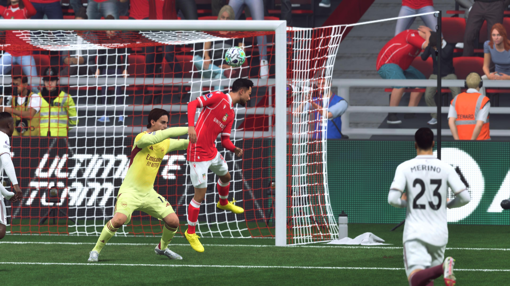

Milán Vitális's Rare Start Delivers a Point as Wrexham and Arsenal Share the Spoils at the Racecourse
The teamsheet went up an hour before kickoff and the loudest reaction in the press box wasn't about Arsenal's front line. It was one name in Wrexham's midfield that hardly anyone had seen there since August.

Milán Vitális has made twenty-four appearances for this club since arriving from Slovakia and started, by Owen Meredith's count, fewer than a handful of them in the Premier League. He is the sort of player a squad accumulates rather than builds around — versatile enough to cover two positions, experienced enough not to panic, never quite spectacular enough to force his way past the names Jenkins reaches for first. On Saturday, with Bobadilla managed for fitness and Fruk carrying a knock from training, Vitális got the nod in central midfield against a title-chasing Arsenal side, and turned in the kind of ninety minutes that makes a manager's rotation policy look less like an accident and more like a plan. Man of the Match, by a distance nobody in the press box seriously disputed.
The goal itself belonged to someone with a more familiar name on the scoresheet. Yacel Amrizi rose to head in a Vitális-carried move in the 37th minute, his sixth Premier League goal of the season, and for a half hour either side of half-time the Racecourse allowed itself to believe this could be a statement result against one of the two clubs above them. Arsenal had other ideas. Kepa Barcola equalized four minutes into the second half, ghosting between Doyle and Heaven at the back post from a corner that Wrexham's back line will want back — the one genuine lapse in an otherwise composed defensive performance that saw both centre-backs rated 7.2. "We didn't lose anything today, and there were stretches where we were the better side against genuinely good opposition," Jenkins said afterward, careful with his framing. "But I'd be lying if I said a point at home to Arsenal doesn't sting a little when we had the game in our hands for twenty minutes."
You don't get to twenty-four appearances in a Premier League squad by accident. I've been ready for a chance like this for a while now.
— Milán Vitális, post-matchThere is a version of this result that reads as a missed opportunity, and Meredith heard plenty of that version from supporters filing out of the ground — a home game against a side directly above them in the table, a two-goal cushion within touching distance, and a point instead of three. But there is another version that says more about the squad Jenkins has quietly assembled underneath the marquee names: a player who spends most Saturdays on the bench can walk into a match of this magnitude and not look out of place. "Depth is the boring word for it, but that's what won us a promotion and it's what's kept us in this table's top four all autumn," one long-time Racecourse regular told Meredith, unprompted, on the walk back into town. Vitális's afternoon is exactly the kind of evidence that argument needs — and exactly the kind of story the club's academy-first recruitment model, still relatively new to the Premier League stage, will want repeated more than once.
Man City's win elsewhere on Saturday means Wrexham slip from third to fourth, still four points off top spot but now with Arsenal, City and United all sat above them heading into the final third of the calendar year. Next up is a trip to Nottingham Forest on November 28th — a side mid-table and unpredictable, the sort of fixture Jenkins has occasionally found trickier than the ones against the division's giants. Whether Saturday's midfield gamble becomes a one-off or the first sign of a squad Jenkins trusts more broadly than his teamsheet has suggested all season is the question Meredith intends to keep asking.
 September 23, 2026 · Bradford
September 23, 2026 · Bradford August 31, 2026 · Wrexham
August 31, 2026 · Wrexham